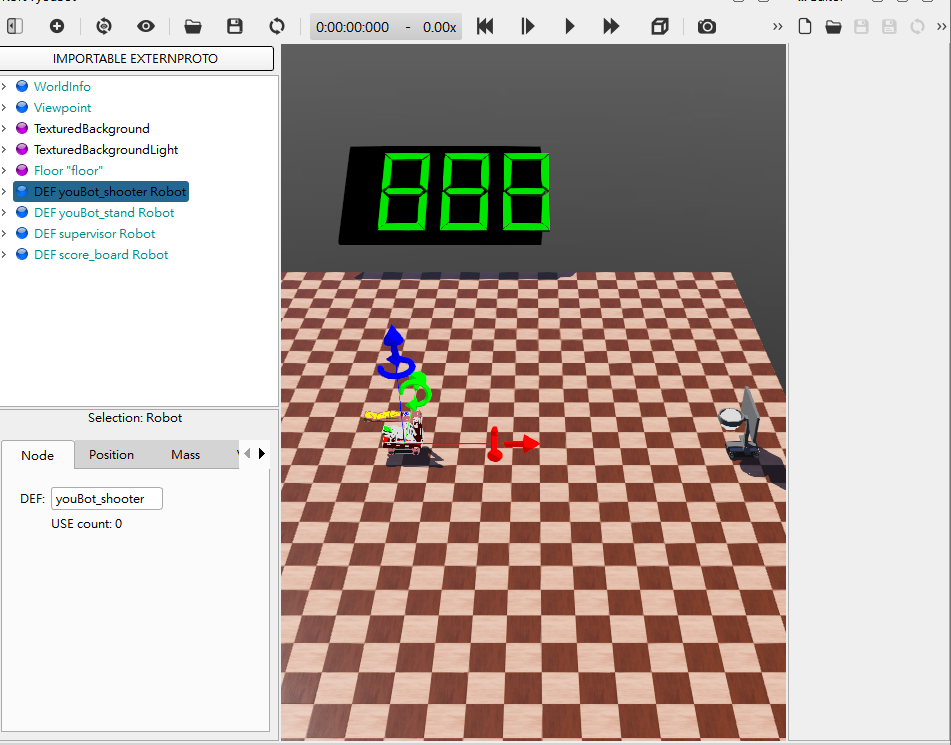
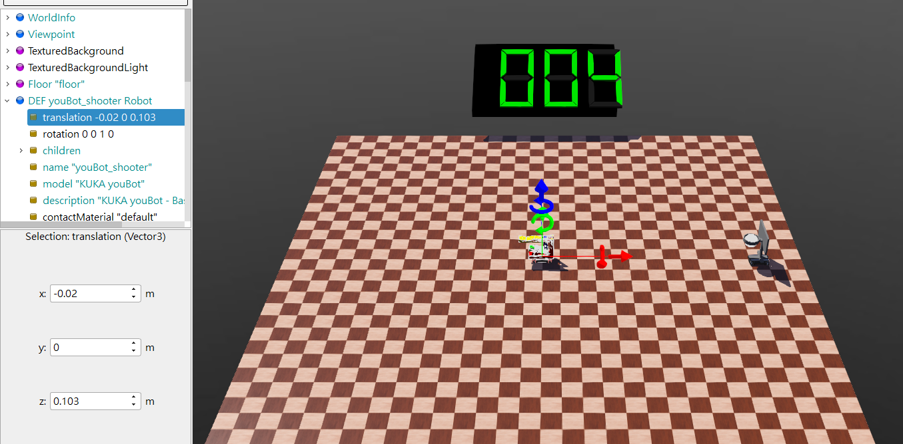

Exam3 <<
Previous Next >> info
Final
期末協同專案執行過程影片、簡報與 PDf 報告檔案 (六人一組) (30%)
題目: Webots 動態投籃模擬系統的協同設計
說明:
籃框架被配置在一定範圍內, 可隨機慢速前進、後退及左右擺動, 投籃機構系統帶有一定數量的籃球, 被配置在可自由移動的輪車上.
操作者可利用鍵盤特定按鍵控制投籃輪車的移動並發射投籃, 每投出一球後系統透過記分板進行計分, 並由送球機構進行補球或移動輪車取球, 遊戲可進行至全部數量籃球投完為止.
請將期末協同專案執行過程、內容與心得, 製作成影片，配合字幕上傳至 Youtube 後嵌入各階段的期末報告頁面中.
影片標題: 國立虎尾科技大學 - 機械設計工程系 - cd2025 期末報告 - 學員學號 - 各階段影片主題
1.在webot預設資料夾中取得youbot，並借助AI幫助擷取只有車身以及輪子，然後再加入PLATE在youbot上方，但是藉由AI擷取後的bodymesh與wheel是webot_2023b中kuka車之下的InteriorWheel.prote與ExteriorWheel.proto，因此必須於.wbt檔案中進行新增
EXTERNPROTO "https://raw.githubusercontent.com/cyberbotics/webots/R2023b/projects/robots/kuka/youbot/protos/BodyMesh.proto"
EXTERNPROTO "../protos/InteriorWheel.proto"
EXTERNPROTO "../protos/ExteriorWheel.proto"
2.接上一步，在PLATE之後放置之前創建好的shooter並套入controller進行控制，能夠使用up down left right操控方向以及j射k收擊球板
3.關於youbot_stand到達第一個座標時會卡住的問題，後續找到是因為InteriorWheel.prote與ExteriorWheel.proto是webot本身預設的，雖然他是.proto檔，但她前身也是一個robot+hingejoint群組，將這之下的motor的maxVelocity預設值14.8更改為100即可
HingeJoint {
device [
RotationalMotor {
name IS name
maxVelocity 100
}
4.然後加入spervisor跟score_board，遇到的第一個問題為無法使用A鍵生成球，原因是webot下的python沒有安裝numpy，只要在webot中的Python command確認python的位址，隨後在使用python -m pip install numpy就可以了
5.在supervisor下的feed_ball出現問題，由於我自行建立的youbot一開始是直接使用robot群組下的name做更動，但feed_ball對於生成球的座標是根據youbot改變的，而改變是根據DEF ... Robot，因此儘管不會顯示錯誤，但仍然無法生成球，因此只要在feed_ball下更改我的DEFname以及在.wbt中給robot群組加DEFname就能做動

6.更改ThreeDigitSevenSegment.proto的放置情形，使用score_board supervisor的controller時似乎會無法讀取.proto的內容，儘管.proto內容與在.wbt中使用Transform節點的擺設情形是一致的，但這似乎是設定，需要更改成在.wbt中放置七段顯示器不放置.proto，或是從controll下手更改
7.更改完七段顯示器計分後，隨之而來的問題是無法使用supervisor偵測計分，檢查後發現計分上需要用的連動有emitter及receiver，並且他們的channel必須一致才能連動，檢測完後開始投籃發現一直無法計分，但似乎是lookup table出問題，將他更改並改回來後再把youbot_shooter的起始距離往後移動一點即可
而本次內容是更改為shooter和stand都由玩家操控，使用B生成球J打擊K收回，controll由info紀錄

8.
在自行製作.proto檔案時發現proto檔案無法直接生成，必須得自行建立，尤其是得將"]{" 這兩個括號給分出來分清楚，而以下就是自行建立.proto檔案的起手內容
#VRML_SIM R2023b utf8
PROTO shooter1 [
# 場景控制
field SFVec3f translation 0 0 0
field SFRotation rotation 0 0 1 0
] {
Robot {
之後導入自己的proto-robot後fourbar_controller無法支援proto檔案，根本原因為proto檔案會省略掉太多子節點，儘管在Scite中檢視也都沒有錯誤，但還是會無法讀取到motor，接著發現不只因為proto檔案無法讀取motor，導入後將proto轉換為bass node後也無法讀取，原因是主要robot為youbot群組，若在下面再加上shooter的robot群組會發生報錯，所以若想將shooter與youbot連動，那麼shooter必須使用solid群組
/downloads/final.7z
/downloads/final-report.pdf
/downloads/final-report.pptx
Exam3 <<
Previous Next >> info